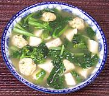

|
Yu Choy, Shrimp & Taro SoupKhmer Krom - Salor spee t'souy trao pakon | ||||
| Serves: Effort: Sched: DoAhead: |
4 soup ** 50 min Yes |
An easy to make, attractive and tasty soup, made from easily available ingredients. See Comments, and also Khmer Krom.. | |||
|
----- 7 1/8 1/8 1 ----- 5 4 14 1/2 1 ----- |
--- oz t t --- oz c oz t T --- |
-- Shrimp Balls Shrimp, raw Salt Pepper, black Scallions ------------ Taro root (1) Stock, light Yu Choy (2) Sugar Fish Sauce (3) --- Garnish Scallions, chopped |
Prep - (30 min)
|